2. ПРОТОКОЛЫ И МЕТОДЫ
2.1. HTTP и HTTPS
В данном разделе мы поговорим про протокол http и его защищенной версии https. Перед тем как приступить к изучению протокола http нужно понять зачем вообще необходимы протоколы. На прошлом модуле вы изучали что такое веб сервер как его установить и настроить на операционной системе Windows. Все чаще сервера работают на операционной системе Linux , он бесплатной и обладает открытым исходным кодом. Так же и с клиентами - клиент, то есть браузер может работать как под операционной системы Windows так и под Linux или вообще работать на мобильных устройств. И для того чтобы унифицировать протокол передачи данных между клиентом и сервером на разных архитектурах и придумывают различные стандарты передачи данных. В нашем случае веб программирование не используется протокол http . Протокол http - это протокол передачи гипертекста. Он основан на протоколе TSP который в свою очередь основан на протоколе IP. И так существуют клиенты , которые являются потребителями отправляет запрос на сервер, сервис свою очередь обрабатывает запрос и отправляет его обратно клиенту. Как устроен запрос который уходит от клиента к серверу? Это обычное сообщение которое состоит из трех основных частей.
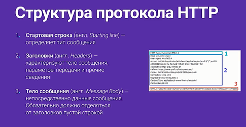
Это стартовая строка на нашем на нашей презентации она указана по цифрой 1 -заголовок, цифра 2 их может быть достаточно много как вы видите и тело сообщение по цифрой 3 . Тело сообщение необязательно не при запросе ни при ответе. Тогда как стартовая строка и заголовок обязательны. Стартовая строка является очень важной частью протокола. Она состоит из следующей схемы : метод протокола,URL -это идентификатор ресурса и версия самого протокола. Для того чтобы лучше понять схему взаимодействия предлагаю представить наш сервер в виде записной книжки. Так вот если сервер это запасная книжка, то ей необходимо управлять. Я предлагаю управлять ей голосом. Голос и является нашей стартовой строкой. Мы можем попросить книжку: "найди запись на 35 странице или найди телефон Иванова Иван Иванович",- слово «найди» является методом нашего протокола и таких методов может быть огромное количество. Например: запиши, удали, измени. Также у HTTP существует огромное количество предустановленных методов. Методы протоколы HTTP делятся на три большие категории - это безопасный, идемпотентные и кэшируемые. Безопасный метод - это те методы которые не меняют состояние сервера при каждом запросе. Идемпотентные методы - это те методы, которые при одинаковом запросе к серверу получают один и тот же результат. Кэшированные методы - это методы которые получают за кэшированные данные сервер. Спецификация http не ограничивает количество методов, но определяет их общий набор. И сейчас мы с вами поговорим про самые востребованные методы. Их на самом деле всего два. В 90% случаев, а то и больше вы будете ими пользоваться. Метод GET является самым популярным методом протокола HTTP. Он используется для получения информации с указанного ресурса. Этот метод относится сразу ко всем трем категориям методов. Давайте посмотрим как же он получается. Зайдем, например, на страницу yandex.ru . Что же здесь является методом get? Пока здесь никаких параметров не передан. Здесь нет метода get метод получается после такой конструкции знака вопрос, чтобы посмотреть наглядно мы можем зайти в market . Там это будет более наглядно и мы уже видим, что у нас есть первые методы и методы они в yandex market используются для их собственной аналитики. Но это нам не так важно как методы, которые получаются при фильтрах. Например мы зайдем какую-нибудь категорию электроники. Заходим в мобильные телефоны. Справа мы видим фильтр который нам нужен. Основное применение метода get это как раз любые фильтрующие свойства на сайте. Если мы сейчас хотим сортировать весь список по производителю apple щелкаем и видим что у нас появился дополнительный фильтр, который говорит о том что он покажет нам все телефоны марки компании apple . Если мы сюда добавим телефоны производителя huawei мы увидим что наш параметр изменит свое значение вот на такое. Вторым по популярности , но от этого не менее значимым является метод POST. Он применяется для передачи пользовательских данных на сервер. В отличие от метода get он не относится ни к одной из категорий. Он является не безопасным поэтому все данные, которые приходят от пользователя, таким методом необходимо проверять только после тщательной обработки, записывать в базу данных. Также существует огромное количество других методов о которых мы вам сегодня ничего не расскажем потому, что их доля невелика. Если вам когда то потребуется воспользоваться тем или иным методом вы спокойно сможете прочитать спецификацию http. Частью структуры http протокола являются заголовки. Заголовки - по сути это строки, имеющие пару ключ значения. Заголовки позволяет клиенту и веб серверу передавать дополнительные параметры в запросе. Заголовки делятся на четыре основные категории основные заголовки- не могут включаться в любое сообщение клиента и сервера. Заголовки запроса - используются только в запросах от клиента. Заголовки ответа - это заголовки передаваемые от сервера и заголовки сущности- сопровождают каждую сущность сообщения. Заголовков http существует огромное множество. И все их конечно мы не сможем с вами пробежать на слайде отображены основные заголовки которые в общем то поместились в этот слайд на самом деле основной заголовков сильно больше, но лучше чем один раз увидеть эти заголовки. Давайте попробуем их отправить с сервера для того чтобы попробовать нам увидеть как отправляются заголовки с сервера-Мы зайдем на наш Localhost, который мы создали в предыдущие модули, создадим здесь файл php. Назовем его- Headers.php. Вот. Заголовки http в php можно передавать с помощью функции header. Мы ее определили давайте передадим на сервер заголовок allow. Заголовок allow-говорит о том какие методы можно воспользоваться на сервере. Это заголовок сущности. И так allow и допустим передадим нами уже известные методы get и post.
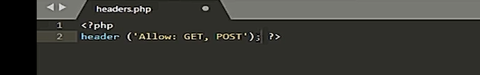
Давайте теперь проверим наш код. Для этого откроем программу postman. Кстати эта программа тоже является клиентом который может отправлять запросы к нам на сервер с помощью протокола http. Берем наш host. Отправим запрос. Как видите вот он наш заголовок, который пришел от сервера. Давайте теперь проверим, что будет если мы уберем эту директиву. Оставляем условный комментарий сохраняем. Еще раз отправляем запрос на сервер как вы видите остались только 6 заголовок. Вы спросите откуда же эти заголовки ведь мы их нигде не определяли. Это стандартная заголовки, которая отправляется вместе с сервером apache . Здесь он говорит о том что я сервер apache . Он говорит про дату в которой обработал запрос и отдался от сервера, а также все остальные стандартные вещи о них мы сейчас останавливаться не будем. Сейчас по сути мы ничего не сделали мы просто отправили ничего не знающие заголовок. Клиенту который не спрашивал есть ли у нас методы, которые он поддерживает или нет. Давайте теперь в качестве примера попробуем отправить с нашего сервера html клиенту так предлагаю отправить ссылку на yandex.ru кликая на эту ссылку должен будет открыться yandex. Так клик. yandex. И так сохраняем. Переходим обратно в наше приложение postman отправляем запрос на сервер видим что заголовок все еще html к нам приходит и видим что у нас действительно пришла html, браузер ее обработал в нашем случае не браузера а postman. Если мы кликнем на ссылку попадем на сайт yandex давайте теперь немножечко изменим тип передаваемых данных и скажем что это XML. Для этого мы воспользуемся уже известной нам уже функцией header и передадим сюда следующий заголовок.
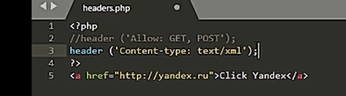
Сейчас мы напрямую сервер отвечает клиенту о том что он должен получить уже не html. А именно xml. Давайте посмотрим что произойдет. Для этого заходим уже браузер а не в postman. Потому что postman даст нам результат. Находим localhost наш header. И как вы видите браузер считает что у нас уже формат XML. И показывает наш html не в виде html а в виде xml. То же самое произойдет если мы напишем xml и передадим ему тип xml. Он корректно отработает и покажет xml, но если мы скажем что это html или просто не скажем ничего, а cервер будет по умолчанию думать что это html тогда выскочит ошибка и браузер не сможет распознать корректно этот код. Мы только что рассмотрели очень важную часть протокола http- это заголовки. Осталась у нас последняя часть не обязательное- это тело сообщение. Тело сообщения как на запрос так и ответ может быть не передан. Очень важно, что в сообщении передаваемых от клиента к серверу заголовок и тело сообщение должно отделяться пустой строкой. Несмотря на то что тело сообщений не является обязательным оно играет очень важную роль в формировании http протокола. Давайте посмотрим на тело запроса что оно может из себя представлять. Тело запроса в основном формируется когда передаются какие либо параметры на сервер. Это параметры post все post запросы передается в теле сообщения которое формируется от клиента к серверу. Тело ответа скорее всего будет содержать ответ потому что именно за этим мы идем к серверу. Мы обращаемся для получения какой либо информации. В большинстве случаев тело сообщение будет содержать готовое html, которую мы запрашиваем тело ответа мы уже с вами сегодня видели, просто не знали что это тело ответ. Давайте еще раз посмотрим на него. Для этого мы перейдем в программу postman и как раз. Тело ответа является тем html код, которому передали сервера к клиенту.
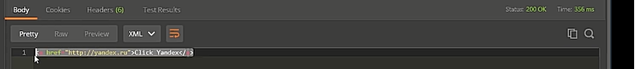
Помимо тел ответа сервер передает http код состояния ответ. Клиент по этому поводу понимает, что произошло с его запросом на сервере и какие дальнейшие действия необходимо предпринять. Каждый http код состоит из трех цифр первая из которых задает класс ответа. Всего в настоящее время выделено 5 основных классов ответа.
- информационный - используется чтобы сообщить клиенту о процессе обработки запрос.
- успешный - в этом классе находятся коды успешного выполнения запроса.
- перенаправление - используется для уведомления клиента о том что необходимо сделать переадресатцию.
- ошибка - клиента отправляется клиенту в том случае если передан неправильный запрос или сервис не смог его обработать.
- Ошибка сервера - отправляется клиенту в том случае если сервер сам недоступен. На нем есть какие то неполадки. Так же как и заголовков в http cуществует очень много кодов ответа. Некоторые из них представлены на слайде. Опять же это не полный набор, а только основные коды которые передаются от сервера клиенту. Давайте самостоятельно попробуем отправить код ответа от сервера клиенту. Для этого мы сначала проверим какой же заголовок передается у нас, в случае успешного ответа для этого мы откроем панель разработчиков в chrome . Обновил страницу, и увидим в поле статус - код 200 который окей. Это значит что у нас, правильно отработался запрос и пришел корректный ответ. Давайте попробуем сказать что у нас ответ некорректный. Для этого в php существует как минимум два способа. Первый- это зарезервированы функция http response код. В нее мы можем указать код. Например 404, что значит страница не найдена, сохраним наш документ. Вернемся в браузер еще раз обновим нашу страницу и увидим ,что статус действительно изменился на 404. Со статусом нужно быть очень аккуратным потому что если поисковик встретит такой статус, он поймет что страницы не существует ее необходимо убрать из индексации. Второй способ, которым можно передать код состояния сервера уже известны нам header. Давайте посмотрим уже написаное нами код мы добавим просто третий параметр 404, сохраняем. файлик.
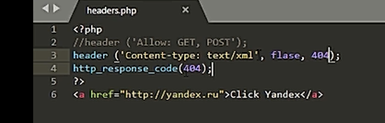
Отправляем еще раз запрос и видим что статус также 404. Давайте уберем убедимся ,что все действительно работает сохраняем. Обновляемся в статус 200. И так мы рассмотрели два основных способа передачи кода состояния с сервера к клиенту. Теперь о http протоколе вы знаете практически все за исключением того что это не безопасный протокол передачи данных. То есть каждый передаваемый параметр передается на сервер в открытом виде и от сервера клиенту тоже для того чтобы сделать его безопасным придуман другой протокол основанный на http. Https- его суть заключается в том что все данные передаваемые от клиента серверу и от сервера клиенту шифруются с помощью сертификата безопасность так называемая SSL или TSL. Давайте рассмотрим краткую схему передачи безопасных данных. Она представлена у нас на слайде . Клиент инициализирует https соединения сервером, сервер понимает, что у него есть приватной ключ, которую необходимо отправить клиенту для проверки в центре сертификации его на подлинность. Клиент получает приватной ключ сервера отправляет его в центр сертификации для удостоверения подлинности этого ключа с помощью публичного ключа. Если такая сертификация проходит успешно, центр сертификации отправляет клиенту данные о том, что соединение безопасны и можно начать передавать данные между севером и клиентом. Это все что я хотел вам рассказать про протокол http и его безопасной версии https. Сегодня мы изучили структуру протокола http познакомились с его методами, заголовками и кодами ответа. По традиции после каждого модуля мы предлагаем вам решить задание. Оно у вас сейчас на экранах, а я благодарю вас за внимание и до новых встреч наших мудрых.
2.2. Пример работы с GET и POST данным
В этом разделе я вам конкретно расскажу, как работать с get, post данными и каким образом отправлять эти данные с вашей веб формы тем или иным способом. Давайте начнем с простой html странички. Ничего сложного там не предлагают, как быстренько собрать страничку. Тэг <Head> кодировка, заголовок и так <body> пустая страничка давайте на этой страничке выведем так <pre> внутри этого эго мы выведем наше супер суперглобальные массивы get and post. Давайте откроем этот сайт посмотрим что выводится на нем сейчас. Хожу в поле нашего сайта а выводится два пустых массива относительно данных внутри метода get и метода post, ничего нет. Давайте научимся сначала работать с данными передаваемых методом get. А как вы помните это данные которые передаются в адресной строке. Таким образом если вручную ввести какие то данные в адресную строку, то эти данные будут автоматически доступны в нашем суперглобальном массиве get. Давайте еще подпишем что это get, а это post.
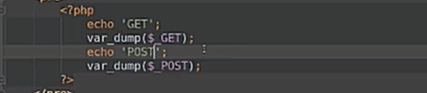
Чтобы мы точно различали какой из них кто, уберем еще вот этот отступ. Сейчас через адресную строку я передал параметр "а" и ему установил значение "b". И эти данные как раз таки доступны внутри нашего суперглобального массива get в виде ассоциативного массива. Таким образом можно уже используя простую адресную строку передавать get данные на нашу страничку. Так например если мы хотим от фильтровать по цене.
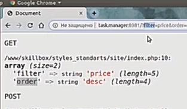
Таким образом мы можем передавать какие то данные и каким то образом обрабатывать содержимое ассоциативного массива. Вот эти данные они доступны соответственно то что слева от равно -это ключ ,справа от равно - это значение. Значение может быть пустое. В таком случае параметр просто передается можно даже не указывать равно а будет то же самое. Следующий способ как мы еще можем передавать данные - заставлять пользователей вбивать что то в адресную строку это не гуманно. Но мы можем составить ссылку, которая будет вести в наш сайт на это ссылка в поле нашего сайта. И здесь мы можем установить любые параметры. Например сортировать шум. Если мы просто зайдем на наш сайт у нас будут пустые параметры, пустые данные массивы где то post. Если мы нажмем на ссылку отсортировать, то мы с помощью этой ссылки ходим на страницу передаем дополнительный get параметр в данном случае это ключик сорт со значением "а" с какого возраста мы хотим что то сортировать, чтобы у нас не было. И третий способ это использовать формулу. Давайте создадим такую формулу .Ключик action указывает куда эта форма будет отправляться. А давайте отправлять в корень сайта. Метод get мы сейчас будем использовать и давайте добавим несколько полей на нашу форму.
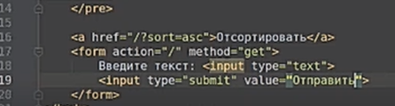
Поэтому{ input type=“submit”, value= “отправить”} это будет кнопочка, которая будет отправлять нашу формулу . То есть вот эта форма будет управлять данным методом get на корне нашего сайта в этой форме есть два поля одно поле это текст поля для ввода типа text, второе это кнопка править. Давайте посмотрим, что у нас получилось.
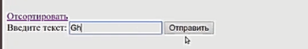
Введите текст и отправить. Давайте введем текст " привет". Жмем отправить и видим, что наш супер глобальный сегмент пустой. Почему это произошло? А произошло это , потому что мы не указали атрибут name у наших полей. То есть мы не говорим с каким ключом идут наши данные. Давайте скажем здесь напишем field, а у кнопки напишу send. Обновляет страничку смотрим что у нас получилось теперь. Снова пишем "привет" отправляем и теперь мы отправили два поля, у нас два поля, поле для ввода, другая - наша кнопочка и отправилась. Значение которое внутри этих кнопках в field мы ввели "привет" это наши текстовые поля , а в кнопке send в качестве параметра стоит значение отправить. Таким образом нам стало понятно, что если у полей в нашей форме не заданы атрибут name нам, то это поле не отправляется, если у нас будут поля с одинаковым name, то первый из них будут проигнорированы. То есть в каждой следующей значении запрет предыдущая. Вот таким образом мы можем отправлять данные методом post методом get. А теперь собственно перейдем к методу post, а данные методом post ссылка или через строку отправить не получится потому что, эти данные не передается через адресную строку, а отправляется в скрытым виде. В этом случае нам нужно использовать только форму. здесь вместо get нужно написать post и теперь эти данные точно таким же образом с таким же свойствами. То есть если мы указали name они будут передаваться если не указали не будут эти данные будут попадать в суперглобальный массив post и внутри этого массива они будут в формате социативного массива. Затем наносим на страничку. Напишу "пока" отправить. Теперь глобальный массив get у нас пустой поскольку мы никакие данные не отправляли мы присылали форму в поле нашего сайта. А методом post мы отправили два поля все тот же field и тот же send . Кнопочки как была отправить так и осталась. А более того мы можем с помощью формы отправлять данные сразу двумя методами. Как это сделать, очень легко. Это же ссылка, а ссылку мы можем написать любую. Значит здесь мы можем дополнительно добавить любые get параметры, которые мы хотим отправить. Хоть мы и так знаем страничку. И попробуем поправить форму еще раз. Я напишу" привет" отправить и теперь мы отправляем и логин yes,в качестве параметра и поля который отправляется веб форм. Но просто выводить наверное с суперглобальные массива на страничку это не так интересно , давайте реализуем какой нибудь более конкретный пример. А давайте добавим три поля для ввода в них пользователь будет вводить 3 числа и выпадающий список. В этом списке мы будем выбирать как отсортировать эти три числа по возрастанию, убыванию или не сортировать никаким образом. Пользователь вводит 3 числа в форму, жмет кнопочку отправить и мы показываем ему 3 числа отсортированные в его выбранном порядке. Давайте это сделаем. Число напишем. Здесь можно использовать тип не text , а можно использовать тип number, тогда уже сил html кода в это поле нельзя будет вбить ничего кроме числа. Назовем их number1, number2 и number3.Кроме этого у нас будет еще выпадающий список. Для этого нам понадобится тег select. name sort это то, каким образом мы будем сортировать и тут три option . То есть три варианта выбора. По умолчанию у нас будет выбор не сортировать. То есть как пользователь ввел так мы и выйдем. Будет по возрастанию в этом случае мы передадим ask и будет поубыванию в этом случае передадим desc. Наша формочка отправить все еще остается такой же.

Введите текст и отправить. Давайте введем текст " привет". Жмем отправить и видим, что наш супер глобальный сегмент пустой. Почему это произошло? А произошло это , потому что мы не указали атрибут name у наших полей. То есть мы не говорим с каким ключом идут наши данные. Давайте скажем здесь напишем field, а у кнопки напишу send. Обновляет страничку смотрим что у нас получилось теперь. Снова пишем "привет" отправляем и теперь мы отправили два поля, у нас два поля, поле для ввода, другая - наша кнопочка и отправилась. Значение которое внутри этих кнопках в field мы ввели "привет" это наши текстовые поля , а в кнопке send в качестве параметра стоит значение отправить. Таким образом нам стало понятно, что если у полей в нашей форме не заданы атрибут name нам, то это поле не отправляется, если у нас будут поля с одинаковым name, то первый из них будут проигнорированы. То есть в каждой следующей значении запрет предыдущая. Вот таким образом мы можем отправлять данные методом post методом get. А теперь собственно перейдем к методу post, а данные методом post ссылка или через строку отправить не получится потому что, эти данные не передается через адресную строку, а отправляется в скрытым виде. В этом случае нам нужно использовать только форму. здесь вместо get нужно написать post и теперь эти данные точно таким же образом с таким же свойствами. То есть если мы указали name они будут передаваться если не указали не будут эти данные будут попадать в суперглобальный массив post и внутри этого массива они будут в формате социативного массива. Затем наносим на страничку. Напишу "пока" отправить. Теперь глобальный массив get у нас пустой поскольку мы никакие данные не отправляли мы присылали форму в поле нашего сайта. А методом post мы отправили два поля все тот же field и тот же send . Кнопочки как была отправить так и осталась. А более того мы можем с помощью формы отправлять данные сразу двумя методами. Как это сделать, очень легко. Это же ссылка, а ссылку мы можем написать любую. Значит здесь мы можем дополнительно добавить любые get параметры, которые мы хотим отправить. Хоть мы и так знаем страничку. И попробуем поправить форму еще раз. Я напишу" привет" отправить и теперь мы отправляем и логин yes,в качестве параметра и поля который отправляется веб форм. Но просто выводить наверное с суперглобальные массива на страничку это не так интересно , давайте реализуем какой нибудь более конкретный пример. А давайте добавим три поля для ввода в них пользователь будет вводить 3 числа и выпадающий список. В этом списке мы будем выбирать как отсортировать эти три числа по возрастанию, убыванию или не сортировать никаким образом. Пользователь вводит 3 числа в форму, жмет кнопочку отправить и мы показываем ему 3 числа отсортированные в его выбранном порядке. Давайте это сделаем. Число напишем. Здесь можно использовать тип не text , а можно использовать тип number, тогда уже сил html кода в это поле нельзя будет вбить ничего кроме числа. Назовем их number1, number2 и number3.Кроме этого у нас будет еще выпадающий список. Для этого нам понадобится тег select. name sort это то, каким образом мы будем сортировать и тут три option . То есть три варианта выбора. По умолчанию у нас будет выбор не сортировать. То есть как пользователь ввел так мы и выйдем. Будет по возрастанию в этом случае мы передадим ask и будет поубыванию в этом случае передадим desc. Наша формочка отправить все еще остается такой же.
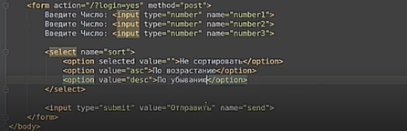
Можно попробовать, что у нас получилось обновляем страничку. Три числа давайте добавим еще у нас в строке выбора, который один. Так, давайте введем число ‘3’ ‘7’ ‘2’ по возрастанию , жмем "отправить" данные мы отправляем. Но у нас сейчас больше ничего не происходит. Нам нужно нашу веб форму обработать. Как это сделать? Ну например отправка в логин get, нет нам больше не нужна мы ее уберем. А ссылочку тоже теперь уберем. оставляем вывод массив. А что нам нужно сделать. Нам нужно написать код который будет обрабатывать нашу веб форму будет располагаться до начала html кода, помните бизнес логика выполняется ,а отдельно отображение ,отдельно вот это наше отображение того как мы выводим наши данные. Здесь будет код который мы выполняем, а давайте сюда еще создадим переменные numbers. Здесь мы выведем. Будет массив, в этот массив мы положим все три числа. Первое нам нужно проверить отправлялась ли форма на нашу страничку или не отправлялся. Как это сделать? Давайте посмотрим на наш план, что из этих данных нам явно говорят что отправлялась эта форма скорее всего эту кнопочка с int . Мы в принципе если мы знаем что у нас только одна форма мы можем просто проверить post на существование с не пустой на пустоту если быть точнее а не пустой ли массив post. В этом случае при любой отправке данных методом post в страничку будет выполняться этот код. Если данные не отправлялись код выполняться не будет. Но мне кажется лучше завязаться на название кнопочки поскольку форм в теории может быть много, а поле name находится только поле <send>должна находиться только у этой нашего плана. Давайте просто проверим что существует. В массиве post ключик <send>. Это будет означать, что была отправлена форма с полем <send>. Это уже чуть больше похоже на конкретно нашу форму. Какая у нас здесь будет обработка. Все очень просто. Мы numbers положим а значение для того, чтобы достать конкретное значение. Мы просто по ключу достаете соответствующие значения. Поскольку в массиве post содержится ассоциативный массив, достаем 1 2 и 3. Можно оставить можно убрать запятую. А теперь нашей переменной numbers содержится все числа давайте посмотрим что у нас получилось с ‘3’ ‘7’ ‘2’.
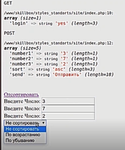
Давайте отсортируем по возрастанию жмем отправить и теперь наш post ‘3’ ‘7’ ‘2’. Но и наши numbers тоже ‘3’ ‘7’ ‘2’. А сортировка не изменилось потому что мы ее не реализовали. Как ее реализовать. Здесь у нас есть массив и нам нужно его отсортировать. Для начала нам нужно проверить, а нужно ли вообще что то сортировать. В данном случае уже проверять не обязательно поскольку уже этой проверкой мы подразумеваем что у нас отправлялась эта форма sort, а в этой форме мы знаем что у нас есть 4 поля 5 и там точно есть поле поэтому можно сразу же проверять на пустоту нет смысла делать здесь дополнительную проверку сет. Иначе это больше уже похоже на паранойю. Мы делаем обработчик этой формы, а в этой форме иногда может не быть полей - это странно. Поэтому считаем что поле есть всегда. Теперь если мы знаем что наше поле сорт указано то есть там не пустое значение там нет значения не сортировать, не пустое значения. Значит нам нужно как то сортировать. Если это значение равно ask. Значит мы сортируем по возрастанию для этого пользуемся вспомогательной функцией sort А если не ask , значит мы сортируем по убыванию. Хотя на самом деле правильнее было бы сделать наоборот. Таким образом если мы передадим туда любое значение кроме desс у нас всегда будет сортировка по возрастанию. Там в принципе может иметь смысл. Давайте посмотрим заработает наш код теперь по возрастания “2” “3” “7”
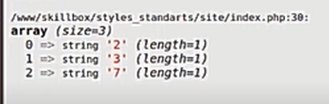
все правильно. теперь наш код работает. И еще одна небольшая хитрость о которой я тоже расскажу. А сейчас мы отправляем три разных числа в разных переменных это не очень удобно. Но это сделано просто для того, чтобы научились работать с методом post на самом деле вы можете отправлять и массивы для этого здесь можно использовать квадратные скобки. Таким образом три этих значения будут сложены в массив. Тогда мы можем просто положить post номер. Поскольку внутри этого ключа будет два числа, проверяем снова заходим на страничку. Теперь мы видим что уже внутри массива post находится под ключом numbers находится массив и этот массив мы спокойно смогли перебросить в нашу переменую numbers. На этом урок окончен мы с вами разобрали как на практике используются глобальные массивы где. Каким образом мы можем отправлять данные с нашей страниц на наш PHP скрипт. До встречи на следующих уроках.
2.3. Пример интеграции верстки
В этом разделе мы реализуем реальный пример. У нас дана верстка сайта, мы ее посмотрим и интегрируем эту верстку в наш сайт. Давайте посмотрим на тот сайт, который у нас есть сейчас.
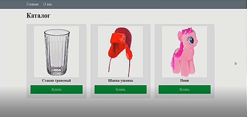
У нас есть своя страничка главная страничка «о нас», где есть данные с описанием, а в интернет магазине мы можем купить три товара это стакан, шапку ушанку и пони, нажимая на кнопочку купить, попадаем на такую форму.
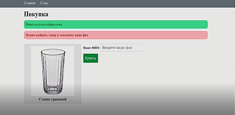
А здесь у нас есть пример вывода сообщения об успешном оформлении заказа и сообщение об ошибке какой то, заполнил, здесь у нас выводится тот товар который мы выбрали - "кнопочку купить". И сюда надо написать ваше ФИО. То есть вот такой очень простой магазин, состоящий из трех товаров. Из чего состоит этот сайт. У нас есть главное меню. Здесь просто ссылки , есть заголовок ,есть каталог товаров. А в принципе то же самое мы можем увидеть в коде. А здесь блок с head, подключение стиля на нашем сайте файл Styles есть. А вот он - блок меню в нем выводится две ссылки на меню.
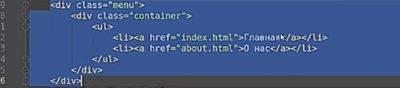
Дальше в контейнере у нас выводится содержимое сайта - каталог. И вот так в виде фигур выводится товар на нашем сайте.
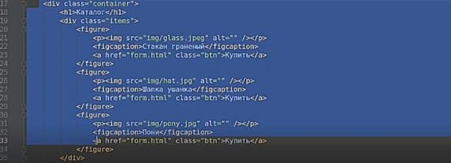
Кнопочка "купить" это тоже ссылка на другую страничку. Все что нам надо сделать это интегрировать верстку, оживить этот сайт, чтобы он работал с реальными данными и реально мы могли кому то что то продать. Давайте начнем. Первое что предлагаю сделать, давайте создадим базу данных товаров. Вот у нас есть три товара. Давайте их вынесем, условно говоря, в базу данных. Для этого мы просто создадим обычный ассоциативный массив с товарами. А начнем мы интеграцию верстки с того что просто переименуем файл индекс PHP. С индекса HTML в индекс PHP, поскольку в HTML нельзя выполнять никакой PHP код. Давайте создадим массив с товарами - продукции. И теперь посмотрим какие данные у нас используются в нашем массиве это ссылка на изображение и названия товара и собственно все больше ничего не используется.
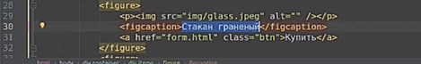
У нас есть массиве product будет три товара. Внутри каждого из них будет указано изображения и названия. И таких товаров у нас будет раз , два, три. Теперь давайте с мигрируем из статичной верстки в наш PHP скрипт. Стакан граненый. Шапку ушанка. И пони. Отлично теперь у нас есть массив с товарами, а изображение находится где img. Находятся тоже в корне нашего сайта.
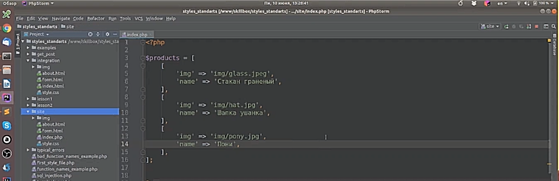
Первое что мы сделаем давайте эти товара здесь интегрируем. Для этого в цикле forеach{products} . Просто видим эти товары. Каждый товар должен быть выведен вот в таком формате значит внутри цикла у нас такая верстка.
А в качестве изображения мы выводим значения в ключе img product. А в качестве названия вводим этот product name. Давайте пока выведем у всех стакан граненый. Чтобы убедиться что это действительно все работает зайдем на главную страничку. Вот у нас сейчас выводятся три товара три разных изображений , но одинаковое название.Сюда выведем name и теперь мы действительно убеждаемся что наши данные берутся из такого массива то есть мы можем вот таким образом дополнять.
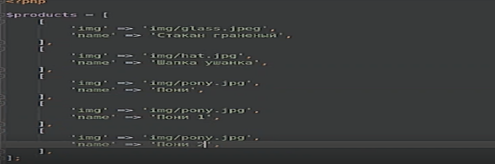
Наш интернет магазин , но теперь он там уже 6 ,5 товаров. А теперь мы оставим 3, так эту часть сейчас мы сделали. Давайте двигаться дальше. А кнопка купить у нас сейчас ведет на страницу form.html. А первое что мы сделаем- переименуем эту страничку form.html в form.php. Теперь эта ссылка ведет на страничку form.php, она у нас располагается в корне давайте не будем учиться и сразу установим правильную ссылку на нашу страничку form.php. То же самое сделаем с ссылкой на главное ,сразу же установим и ссылку о нас. Или о нас пока ,не будем трогать. Теперь когда мы будем переходить на страничку в form.php. Давайте заглянем здесь тот же самый меню. Здесь опять надо поставить "/" наверху поскольку мы изменили уже, здесь у нас есть контейнер ,покупка, сообщение удалось или не удалось отправить ,оформить заказ, здесь у нас вводится товар. То есть мы каким то образом должны теперь отсюда передать товар туда. Как это можно сделать. Давайте введем id нашего товара и он сейчас, предлагаю просто чтобы он совпадал с ключом. То есть предполагается такая структура, но мы поля вводить не будем чтобы не усложнять. А ключом как раз таки будет тот самый id. Будем считать что вот этот наш массив он очень жесткий и он не будет применяться. Давайте здесь в качестве ключа возьмем id. Теперь если мы на эту форму, передадим get параметрам id товара, мы сможем этот товар вывезти. Давайте скопируем сюда список наших товаров. Пока просто скопировать. Теперь вот здесь что нам нужно взять из массива get нужный нам товар. Массивы анкет ключ id.
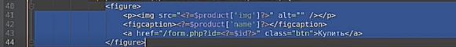
Теперь этот товар мы точно таким же образом как и здесь можно даже просто взять и скопировать. Можем подставить сюда. Однако в остальном верстка остается точно такой же. Посмотрим что у нас получилось. Возьмем купить здесь у нас отображается строка, на нем купить отображается шапка пони тоже ,пони работает все отлично значит товар мы сюда попали. А следующая проблема которую уже видно сейчас у нас здесь список товаров и здесь список товаров надо бы его куда то унести. Давайте создадим новый файл products.php. Вытащили перемены products отсюда сюда и подключим этот файл в двух файлаx. А как помните здесь тоже используются относительные и абсолютные. Мы можем использовать относительно, поскольку мы находимся в корне сайта. А если мы захотим использовать абсолютной адрес то здесь указав “\” будем отсчитывать адрес от корня сайта поскольку подключение файлов осуществляется силами файловой структуры, значит вот этот “\” вначале будет означать на корень файлы системы. А чтобы сделать все правильно есть специальная константа "dir", которая указывает в текущую директорию то есть относительно этой директории мы будем подключать файл products ибо есть еще один вариант это переменной сервер с параметрами {document.root} этот параметр настраивается настройкой нашим веб сервером и он обычно указывает в корень нашего сайта. То есть если у нас правильно то скорее всего именно он будет указывать в коде сайта. Таким образом, с помощью такого подключения везде одинаково мы будем обращаться к файлам которые находится в форме сайта. Потом мы спокойно можем взять данные отсюда. Давайте теперь проверим, что массив get существует, если не существует то будем по умолчанию всегда покупать первый товар, если не выбрали ничего покупайте граненый стакан. А это сокращенный тернарный оператор
он заменяет - вот такой оператор.
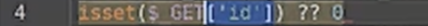
Если существует, то возвращаем это значение. Если не существует то 0, вот такой конструкции мы заменили таким образом теперь у нас есть веб форма которую нужно заставить работать. Метод action, куда мы будем отправлять наш товар. Есть несколько способов, как сохранить id. Ведь когда мы отправим нашу форму, мы можем затерять этот id товара, а мы его можем указать здесь.
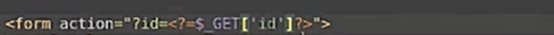
Таким образом, мы его сохраним либо мы можем создать здесь скрытые поля под себя. 1.name- 1, назначение как раз таки тот. А наш товар как раз вот этот случай к нам. То есть по идее вот здесь, вот здесь мы его можем использовать. Введем здесь поля id. В этом случае мы его сопоставим с ключами нашего массива. Не будем ничего выдумывать. Тогда теперь на главной странице здесь нужно вводить не id, не ключ, а продукт id. Это будет правильнее. Здесь мы этот товар достали и теперь мы опять же можем обращаться к ключу продукта. Они и здесь тоже продукт id, так немножко переконструировав наш код мы избавились от дублирования кода. Теперь просто пользуемся уже готовыми данными внутри нашего товара. Если вы будете работать с базы данных то скорее всего такое поле id у вас наверняка будет у ваших элементов поэтому такой подход имеет смысл. То есть мы будем отправлять id и методом get и методом post. поскольку она отправляет данные фио в теории может еще какие-то данные которые лучше не передавать в открытом виде. Кроме того мы на эту страницу можем заходить методом get. Мы уже сюда передаем, поэтому обработку лучше сделать отдельно. Давайте теперь добавим post id товара, который у нас уже есть. Мы его всегда передаем get параметрам так что в принципе на самом деле вот это поле нам и не нужно оно всегда придерживается get параметрам, либо можем уже здесь переделать на другую переменную, которая в зависимости от того каким методом отправляли данные на эту страницу get или пост будет брать соответственно с соответствующих цифр глобального массива. Теперь мы можем отсюда и ссылки брать сделать ссылку на форум на наш текущий скрипт. А первый раз мы заходим с get параметрами, потом когда отправляем форму и тогда эти данные уже будут бегать внутри .
Теперь для того чтобы эта форма отправлялась нам нужно добавить имена, name, например это наше имя. А в купить. Можно добавить можно не добавлять мы проверяем на пустоту нам в принципе это поле не нужно. А то есть у нас будет заполняться одно поле и это поле у нас обязательно для заполнения давайте здесь звездочку поставим поскольку у нас есть ваш выбранный товар и заполнить ваше фио. То есть здесь в обработке мы добавляем новые узлы. Нам нужно проверить заполнена ли поля фио. Если он пустой ключик name, это будет значить ,что наше поле не заполнено. Давайте введем еще две вспомогательных переменной.
В этом случае если у нас а не пусто ,пустое имя нам нужно назначение рок ставить true. Нам нужно вывести ошибку ,либо если пусто. К нему если не указано id товар. В противном случае мы считаем что данные у нас есть. Мы можем создать специальный функцию, которая будет обрабатывать покупку нашего товара. Мы давайте ее назовем в качестве параметра передадим сюда product ,массив с нашими полями и имя. После. А давайте создадим вспомогательный фай - файл. order - его назовем и внутри этого файла у нас будет своя функция. Которая может делать какие то данные, действия. Все зависит от того что вы хотите с этим делать. А она принимает продукт и название, не название, а имя пользователя и возвращает что то вычисляют и возвращает результаты своей работы. Например true, если все создавалось успешно. Тогда переменная с success определяем по результату выполнения нашей работы. Они немножко неправильно немножко неправильно. Если заказ успешно созда, то с success пойдет true, а в противном случае снова выйдем на ошибку ,хоть она уже будет другой. Так в теории внутри этой функции вы можете выполнить любое совершенно код. Здесь можно а не только параметр с ошибкой но и текст ошибки формировать. И давайте просто выведем если. Если у нас установлено значения с success, то мы вводим этот текст.
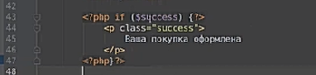
Если устанавливать значение коров то вводим соответствующий текст с ошибкой.
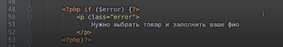
Теперь давайте посмотрим на то что у нас получилось. Заходим на страничку возьмем на шапку ушанку 500 ошибка ошибка а здесь пробел не хватает. А на страничку нажали на шапку ушанку теперь мы продаем шапку ушанку нам кнопку купить форма отправляется а внутри get параметр у нас пропал. Но несмотря на это мы все равно все еще знаем что мы собирались купить шапку ушанку, говорит могут запомнить имя. Давайте заполним имя - Михаил покупаем и другая 500 ошибка так чтобы это могло значить. Это значит что у нас где то внутри здесь есть еще ошибка. Давайте посмотрим что нам говорит наш сервер. make order - да мы объявили создали для нее отдельный файл, но этот файл не подключили давайте его подключим, обновляем страничку и вся ваша покупка оформлена, но вскоре мы можем даже и ничего не увидеть я снова нажал на кнопку купить. Давайте так и сделаем. Если с successs то мы выводим сообщение об ошибке и больше ничего не выводим,в противном случае будем рисовать. Вот эту веб форму. Купить и теперь ваша покупка оформлена здесь теперь мы можем вывести любой текст внутри функции make order, мы можем выполнить любой код. Давайте двигаться дальше у нас еще есть страничка about html, а ее нужно разместить разместить в специально в отдельном подразделе. То есть у нас должен быть раздел - about и внутри него мы хотим разместить страничку. Для этого мы ее переносим и переименовываем из about.html в index.php. Это у нас страничка о товарах. Здесь у нас снова ссылка. И здесь у нас ссылка. У нас такой раздел у нее теперь откроем все наши странички и поменяем эту ссылку. Чувствуем что что то не так. Одно и то же действие приходится делать много, много раз. Давайте для начала посмотрим что она заработает на страничку about. И мы перешли на страничку текст мы видим нужный, но чего то не хватает, не хватает стилей. Почему не подключились стили? Потому что стили мы подгружаем из корня нашего сайта. То есть если возьмем поставим вот так то все заработает но это неправильно. А в теории эта часть начальная она идентична у нас на всех, всех, всех страницах, поэтому мы ее можно попробовать вынести. Давайте так и сделаем.
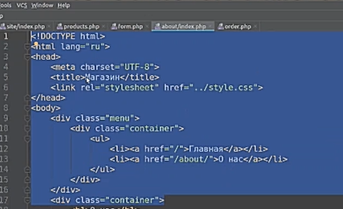
Дальше у нас идет заголовок который тоже в теории на каждой страничке выводится и мы тоже можем вынести. Как в этом случае в этом случае создает два файла hearder и footer. Создадим интеллектуал, ее назовем templete. И здесь создадим два файла –header.php и файл в footer.php. В header.php что мы вынесем в header. мы выяснили вот эту часть можно даже вместе с заголовком можно давать, без заголовка. Вынесем header.php А footer.php мы вынесем соответственно закрытием всех этих самых тэгов. У нас здесь открылся тэг боди, открылся тэг гиф и открылся так html , вот мы здесь закрываем <div> <body>и <html>, теперь на этом фоне кем мы можем вначале подключить header в конце footer. Давайте пока сделаем пункт. Проект. header.php. И здесь подключим footer.php. Это мы сделали это на страничке формы давайте зайдем на страничку форума все по идее должно быть как надо но на спорт никак надо что то случилось пошло не так. Давайте разбираться что мы сделали неправильно. Так почему же header оказался не на своем месте а потому что здесь вместо header, должно быть написано footer, снова на страничку. Так и теперь у нас страничка выглядит правильно красиво то как это должно быть. А давайте теперь то же самое проделать на остальных страницах. На свою страничку форум страничка about. Это у нас header.php Это у нас footer.php. И то же самое нужно сделать на страничке индекса, а на главной странице есть у нас header.php Здесь мы подключим footer. А теперь у нас на разных страницах. Например на главный массив с продуктами на странице form подключаем массив и с продуктами и функция order а в теории это было бы тоже неплохо вынести в одну, в один общий файл, который будет подключаться в header, когда обработку нужно будет сделать после header. Вывод подключение файла сделаем его header. Какое преимущество нам это дает теперь когда каждый раз когда мы просто отмечаем header на страницу мы одновременно с этим загружаем полностью ядро нашего сайта то есть все, все, все функции которые у нас на сайте доступны. Может показаться что это не очень хорошо что мы загружаем на некоторых страницах те функции которые нам на этих страницах не понадобится. Но на самом деле ничего в этом плохого нет. Гораздо удобнее и проще работать когда все ядро все под себя весь базовый функционал загружен на нашу страничку заранее. Здесь еще что то можно поправить можно даже совсем убрать странички с формой чего нет. вот таким образом мы вынесли общие части нашего шаблона в отдельный файл и теперь если нам нужно добавить в раздел меню, контакты. Вот так. Есть небольшой контакт. Мы просто все уберем. Теперь на всех страницах где бы мы ни находились страницы контакты появятся, но снова вернулась та же самая проблема. На страницах вложенных разделов у нас не отображается стиль. Давайте починем. Мы указали теперь на этой странице на это отображается а на главной все еще работает, но работает по другой причине а не потому что мы правильно все сделали. А если вы с главной поднять на раздел на вверх вы все равно останется на главной странице. Давайте чтобы это продемонстрировать я страницу контакте перенесла внутрь раздела и бал. То есть у нас будет еще один раздел контакт. И посмотрим что теперь у нас получилось. На главной работает у нас работает на странице в контакте не работает. Хорошо давайте еще на один раз, раздел тогда будет работать опять же везде но по неправильной причине поскольку мы упираемся в корень сайта и в корне сайта снова отсчитывать. Так если добавим еще один раздел опять еще один раздел это что нам надо сделать, так может быть, чтобы точно наверняка. Нет это на самом деле неправильно. Правильно здесь будет просто указать корень нашего сайта. А здесь еще часто можно встретить другую ошибку иногда пытаются указать так. А это неправильно поскольку внутри как мы указали ссылку на сайт, а ссылка на сайт это не путь его файла системе, ссылка на сайт это ссылка на наш сервер и отсчет пути внутри которого будет происходить от корня нашего сайта сразу же не нужно здесь указывать директории в которой находится наш сайт. Вот таким образом мы создали сайт который у нас везде работает. Мы можем покупать товары можем правильно покупать товары даже ошибочка вышла. Мы не можем купить граненый стакан, вот такой у нас злой сервис. Давайте еще кое что сделаем. Сюда обратно в качестве value, введем значение то которое пользователь ввел раньше. Если сделать так,то мы получим ошибку. А поскольку первый раз когда мы зайдем на эту форму переменной name еще не существует. Можем добавить вывод ошибок. А можете поверить на слово. Давайте добьемся ошибок. К тому же у меня здесь где то есть. Скопировал вывод всех ошибок оставлю в heard на наш сайт. Обновляет страничку а теперь мы видим здесь предупреждение. Что то пошло не так. А потому что мы здесь обращаемся к несуществующей переменной. Давайте отменим форму и исправим это. Для этого нам просто нужно проверить на существование наши перемены. Все отлично работать. Теперь когда мы будем отправлять форму купить а это значения будет поставляться обратно еще что здесь стоит сделать. А воспользоваться функциях html- спешил час эта функция предназначена для экронирования данных есть ли вы в name можете внести что нибудь некрасивое. Давайте посмотрим исходный код скопировать. И вставил его сюда. И не будем использовать функцию html и нажмем купить и здесь что то уже пошло не так. Какой то тэг вылез а что то не так. Если еще немножко по химичить чуть в теории сюда можно скрипт какой нибудь написать. Давайте так и сделаем. Так. Нажмем купить, здесь была ошибка браузера. В этом случае нам помог рассказал что у нас тут эксцесс атак. Это самый типовой пример для сайта, но если мы сделаем так и попробуем на то ничего страшного не произойдет и форма у нас не рассыплется и скрипт не выполнится, поскольку мы преобразуем в безопасный вид ваш самый безопасный вид значения из массива просто так а теперь собственно пришло время разобраться с самой проблемой. Почему мы не можем купить стакан. А здесь у нас проверка, если не пусто имя или не пуст id. Но нужно учесть что, в id у нас начинается с нуля. Значит это проверка у нас не корректно. А как проверить, что здесь действительно, что то есть какое то значение. Например, можно справиться с функцией контроля. И посчитали что здесь длина символов больше одного. Давайте попробуем, что у нас получилось. Ошибка. Нам конечно надо меньше. Вот теперь мы можем купить любой товар на нашем сайте и стакан и пони как завещали на страничках от нас. На этом наш практический урок окончен. Мы с вами разобрали реальный боевой пример интеграции верстки на сайт и даже сделали небольшой свой магазинчик.